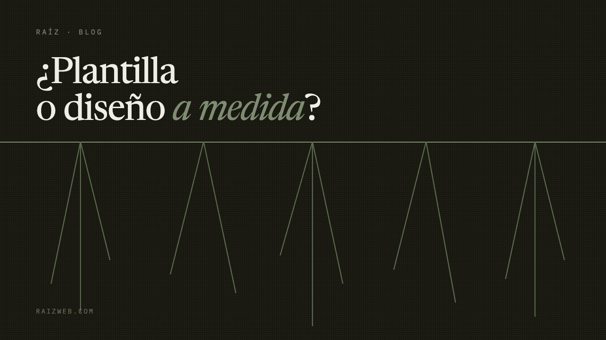

Blog
¿Plantilla o diseño a medida?
Somos un estudio que hace sitios a medida, así que ya sabes para qué lado tiramos. Por eso este artículo empieza al revés: con los casos en los que una plantilla es la decisión correcta y contratarnos sería tirar el dinero.

Cuándo la plantilla es la respuesta correcta
Hay tres situaciones donde pagar un diseño a medida es gastar de más, y conviene decirlas antes que nada.
Cuando todavía no sabes qué vendes. Si el negocio tiene menos de un año y la oferta sigue cambiando cada mes, cualquier cosa que construyas a medida va a estar obsoleta antes de amortizarse. Una plantilla de 200 pesos al mes te deja probar, equivocarte y cambiar el rumbo sin haber enterrado veinte mil pesos en una estructura que ya no describe tu negocio. Primero averigua qué vendes; luego construye la casa.
Cuando el sitio es un folleto y nada más. Si tu negocio vive de recomendación directa y la página existe nada más para que quien ya te conoce confirme que existes y encuentre tu teléfono, una plantilla bien llenada hace ese trabajo. No todo negocio necesita salir en Google: si el 90% de tus clientes llegan porque alguien les pasó tu número, invertir en posicionamiento es resolver un problema que no tienes.
Cuando el presupuesto real es de cinco mil pesos. Esto hay que decirlo sin rodeos: con ese presupuesto, un sitio a medida mal hecho es peor que una plantilla bien hecha. Quien te cobre cinco mil por «diseño original» te va a entregar una plantilla con el logo encima, pero sin soporte, sin actualizaciones y sin que puedas mantenerla tú. Más vale una plantilla honesta que un trabajo a medida que no alcanzó.
Dónde empieza a doler
El problema de la plantilla no aparece el primer día. Aparece al año y medio, y casi siempre por una de estas cuatro puertas.
El sitio no puede hacer lo que tu negocio ya hace. Abriste una segunda sucursal, o empezaste a vender un servicio que no estaba, o necesitas una página por cada zona donde trabajas. La plantilla tiene las secciones que tiene. Lo que quieres añadir no encaja, así que lo metes a la fuerza en un bloque que no era para eso, y el sitio empieza a verse como una casa con cuartos pegados por fuera.
El peso. Las plantillas cargan de todo para servir a todos: carruseles que no usas, fuentes que no aplicaste, animaciones de la demo original. En el celular eso se nota, y Google lo mide. Es la diferencia entre cargar en un segundo y cargar en cinco, y el que llega con datos móviles en la calle no espera cinco segundos.
El techo del SEO. Buena parte de lo que de verdad posiciona —la estructura de las URLs, los datos estructurados que le dicen a Google qué es tu negocio, el control de qué páginas se indexan— en una plantilla o no se toca o se toca a medias con un plugin. Llegas a cierto punto y no puedes subir más, no porque te falte contenido, sino porque la base no da.
La renta. Mientras pagues, tienes sitio. El día que dejas de pagar, no te llevas nada: ni el diseño, ni la estructura, ni en varios casos el dominio. Dos mil pesos al año parecen poco hasta que llevas seis años pagando por algo que nunca fue tuyo. Nosotros entregamos el código fuente precisamente por esto.
Los números de los dos caminos
Comparemos cinco años, que es lo que suele durar un sitio antes de rehacerse. Son cifras de referencia, no una cotización.
Plantilla: entre renta de plataforma, plantilla premium, dominio y algún plugin de pago, lo normal es andar entre 4,000 y 12,000 pesos al año. En cinco años, entre 20,000 y 60,000 — y al final no tienes nada que te pertenezca.
A medida: un pago único, más hosting y dominio, más mantenimiento si lo quieres. Nuestro nivel de entrada va de 12,000 a 15,000 pesos y el intermedio de 25,000 a 32,000, con el código entregado. Los tienes en la página de servicios con todo lo que incluye cada uno.
En plazos largos los dos caminos cuestan parecido. La diferencia no está en el total: está en que uno termina con un activo tuyo y el otro con un recibo mensual. Y está en el techo — el que se queda en plantilla cinco años se queda cinco años con el mismo techo de SEO.
Cómo decidir sin que te vendan nada
Tres preguntas, contestadas con honestidad, resuelven el noventa por ciento de los casos.
¿De dónde llegan hoy tus clientes? Si llegan por recomendación o por redes, el sitio es un respaldo y la plantilla basta. Si quieres que lleguen por búsqueda —gente que no te conoce y teclea lo que vendes—, entonces el subsuelo importa y ahí la plantilla te va a frenar.
¿Cuánto vale un cliente nuevo para ti? Si tu ticket es de 300 pesos, el sitio tiene que costar poco porque tarda mucho en pagarse. Si un solo cliente te deja 30,000, un sitio que te traiga dos al año ya se pagó solo. Haz esa cuenta antes de pedir cotizaciones; cambia completamente qué presupuesto es razonable.
¿Quién va a mantenerlo? Si nadie en tu negocio va a tocar el sitio nunca, necesitas algo que no requiera mantenimiento o alguien que lo haga. Si alguien va a subir fotos y cambiar precios cada semana, necesitas que sea fácil para esa persona, y eso se diseña a propósito.
Lo que nosotros haríamos
Si el negocio es nuevo y todavía estás averiguando: plantilla, y nos hablas en un año. Si ya sabes qué vendes, a quién, y quieres que te encuentren buscándolo: a medida, y entre más pronto mejor, porque el posicionamiento tarda meses en moverse y cada mes en plantilla es un mes que no estás acumulando.
Si no tienes claro en cuál de los dos estás, mándanos tu dominio. Te decimos qué tienes hoy y si de verdad necesitas cambiarlo — incluida la respuesta de que no lo necesitas, que la damos cuando toca.
¿En cuál de los dos estás?
Mándanos tu dominio y te devolvemos un diagnóstico honesto. Sin llamada de ventas.
Pedir diagnóstico gratis